Service, Reputation And Expertise
An International Power
Isnandia Global International has quickly become synonymous worldwide with the ideals of service, reputation and operational expertise. It's emphasis on these ideals have allowed Isnandia Global to rapidly ascend the ranks of the international commodities markets.
We have whatever you need.
Animal Feed
Isnandia Global has been supplying animal feed to some of the largest dairies and feedlots in the world for the past half decade. When it comes to delivering your product to your destination, you can trust us with delivering what you need.
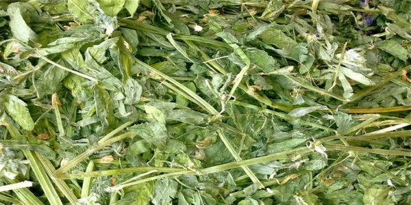
Alfalfa Hay
Alfalfa Hay (Medicago Sativa or Lucerne Hay) is one of the most nutritious, versatile crop commonly used as animal feed for cows, beef cattle, horses, camels, sheep, and goats. Alfalfa has high protein levels and ideal fiber levels allowing it to be easily palatable and digestible. We freshly harvest, bale, and store this product all year round.
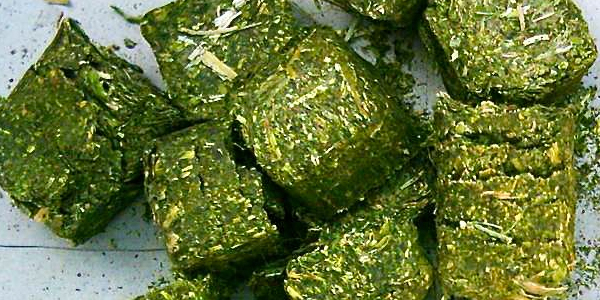
Alfalfa Cubes
Alfalfa Hay (Medicago Sativa or Lucerne Hay) is one of the most nutritious, versatile crop commonly used as animal feed for cows, beef cattle, horses, camels, sheep, and goats. Alfalfa has high protein levels and ideal fiber levels allowing it to be easily palatable and digestible. We freshly harvest, bale, and store this product all year round. It can also be found in cube form.
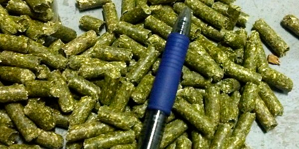
Alfalfa Pellets
Alfalfa Hay (also found as pellets) (Medicago Sativa or Lucerne Hay) is one of the most nutritious, versatile crop commonly used as animal feed for cows, beef cattle, horses, camels, sheep, and goats. Alfalfa has high protein levels and ideal fiber levels allowing it to be easily palatable and digestible. We freshly harvest, bale, and store this product all year round.
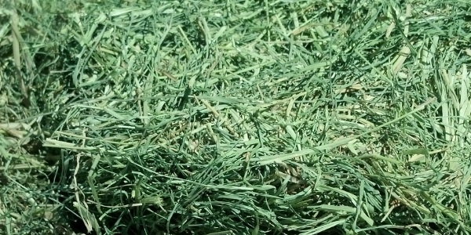
Bermuda Grass
Bermuda Grass (Cynodon dactylon) is a soft, stemmy grass recently popular for use as animal feed, for cattle primarily, although some people prefer to feed stable animals like horses. Bermuda is a summer, perennial grass harvested in warmer climates.
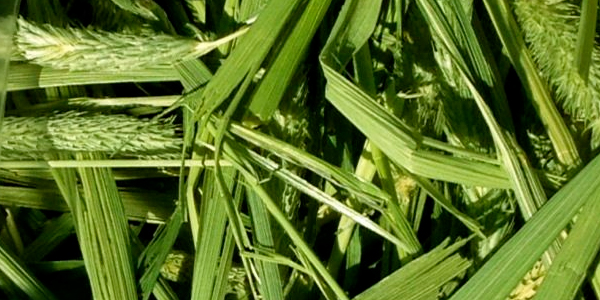
Timothy Hay
Timothy Hay (Phleum pratense) is another perennial grass hay, which serves as a great nutritious feed for horses, due its high fibers levels and relative feed value. Typically the first cutting provides longer seed heads and stems, more suitable for horses.
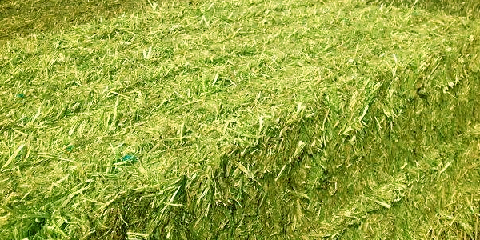
Oaten Hay
Oaten Hay (avena sativa) has a green-gold color with a soft palatable texture. It is harvested in the late summer, early fall months and is a great feed for both cattle and horses high in fiber.
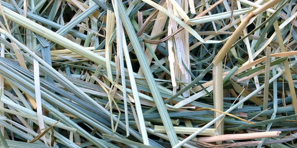
Blue Grass
Bluegrass (Poa pratensis) is a straw with a low protein and high fiber content. If this grass straw grows to its full height of 2-3 feed, the heads are blue in color, hence the name bluegrass. Since it spreads with rhizomes, it forms a sod, which allows it to be more palatable even for sheep and horses.
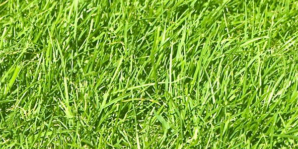
Ryegrass
Ryegrass (Lolium) has a lot of species and is typically a cool season green grass with high growing rates. Perennial ryegrass has a long growing season, but both annual and perennial ryegrasses have high quality nutrients and are highly digestible for all classes of ruminant animals.
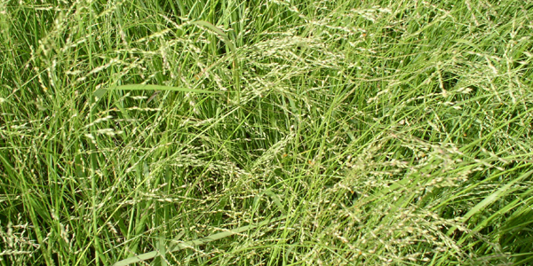
Kleingrass
Kleingrass (Panicum coloratum) is a perennial green grass with fine stems and leafy texture. It is mostly digestible and suitable for cattle and sheep. Some people might prefer to feed it to camels as well. It is a warm season grass perfect for grazing.
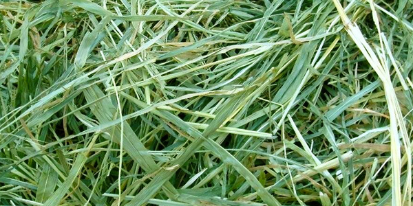
Sudan Grass
Sudan grass (sorghum drummondii) is a hybrid grass hay best suited for cattle and not recommended for horses. It is desireable to harvest this crop when it is about 30 inches high! Sudan grass is similar to corn silage in relative feed value (RFV) for sheep and beef cattle.
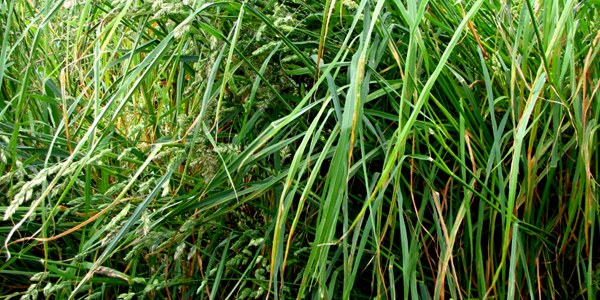
Orchard Grass
Orchard grass (dactylis glomerata) is a green perennial bunchgrass, an excellent alternative to timothy grass hay for horse feed. It can also be used as a pasture forage and harvesting prior to bloom yields a high nutritious animal feed crop.
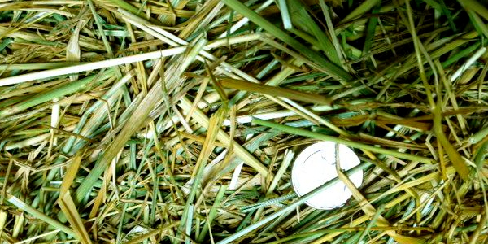
Tall Fescue Grass
Tall fescue grass (Lolium arundinaceum) is a cool season perennial bunchgrass, and suitable as animal feed for cattle and horses. It is best harvest during late fall and early winter when it is high in protein, sugars and digestible energy.
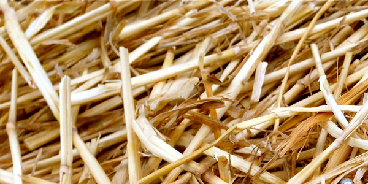
Wheat Straw
Wheat straw (triticum aestivum) is a versatile crop used for fuel, animal feed, or bedding. Bright golden in color, this crop has a low digestible and nutrient content, and is often mixed with other higher protein hays like alfalfa to provide an excellent feed for cattle.
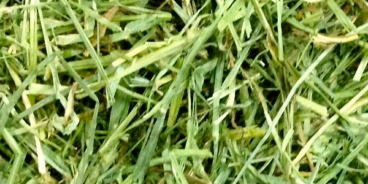
Triticale
Triticale Hay (Triticum Secale) is a hybrid of Wheaten Hay and Rye Hay (wheat grain and rye grain) with high nutritional value for both dairy cattle and beef cattle. It can serve as a good alternative to oaten hay for swine and poultry feed primarily due its soft texture and palatability.
The finest grain and wood exports the world has to offer.
Grains
Quite simply, there is no grain that Isnandia Global has not processed or shipped through it's many affiliated facilities around the world.
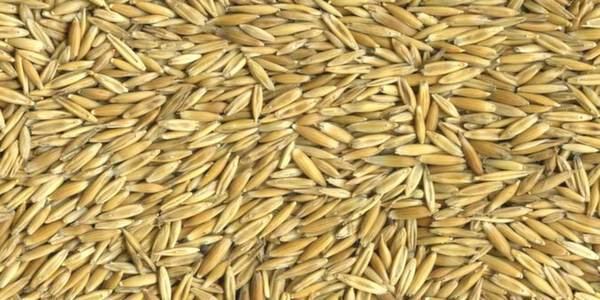
Oats
Oats (Avena Sativa) is a species of cereal grain which is used for consumption both by humans and livestock. Humans use oats as food products due to its high fiber and the beneficial effects oats have on reducing cholesterol, while it serves as a nutritious and protein-rich foodstuff for livestock. The cleaning of oats is done both by machine and by hands – typically machine cleaned oats are coarser, but less expensive..
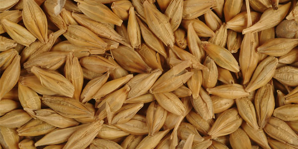
Barley
Barley is a great livestock feed, mostly used for animal or human consumption and malting. High protein barley is great feed for horses, cattle, sheep and goats, while high starch barley is more suitable for malting.
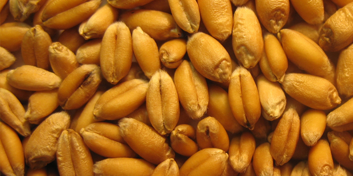
Wheat
One of the most well-known sources of consumption in both animal and human history, wheat is a very palatable and digestible feed, with its primary source of energy in the form of carbohydrates. Wheat and rye cross to make triticale a highly nutritious cereal grain used for both dairy and beef cattle.
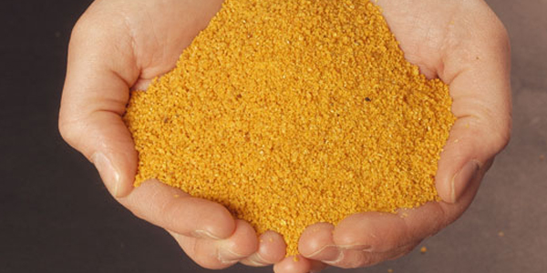
DDGS
DDGS is an ethanol by-product used as livestock for swine, beef and dairy cattle primarily. It is a low-starch, high fiber energy source and can be used as feed instead of gluten feed or soy hulls due to its great nutritional value and the fact that it has an almost indefinite shelf life.
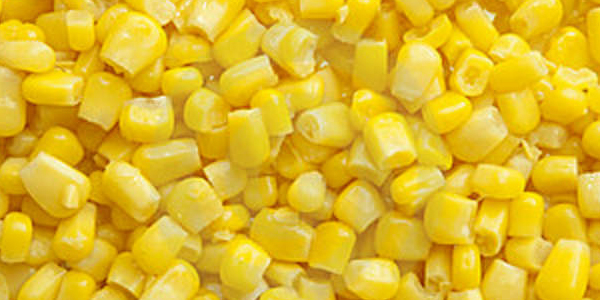
Corn
Corn is one of the world’s foremost commodities and the United States is the largest producer and exporter of corn in the world. Corn has been one of the basic feed crops since the beginning of human civilization, and its usage cannot be overstated in Asia, and the South and Central Americas. Serving as a basis for oil, food and other by-products, corn will always be one of the staples for humankind.
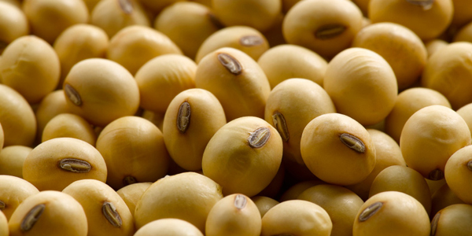
Soybean
Soybean (Glycine max) is a type of legume found natively in East Asia. It has become very popular in the world both in its natural and processed forms. Soybean is used to produce soy oil, and popular food products include soy sauce, soy milk and soy protein.
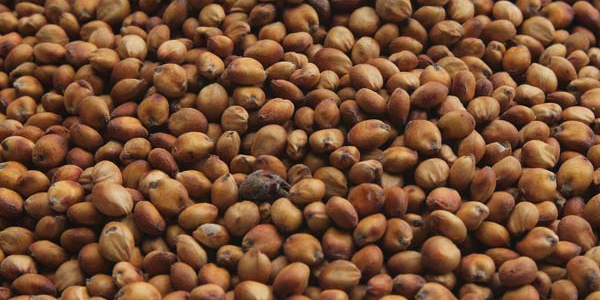
Sorghum
Sorghum (Sorghum bicolor) is an important world crop, used for food, fodder and biofuels. It is especially important in arid regions, given that it is a staple for people residing in such regions. In fact, it is one of the most important food crops in Africa, Central America and South Asia, even considered the “fifth most important cereal crop grown in the world”.
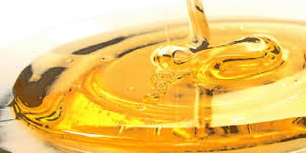
Honey
Corn is one of the world’s foremost commodities and the United States is the largest producer and exporter of corn in the world. Corn has been one of the basic feed crops since the beginning of human civilization, and its usage cannot be overstated in Asia, and the South and Central Americas. Serving as a basis for oil, food and other by-products, corn will always be one of the staples for humankind.
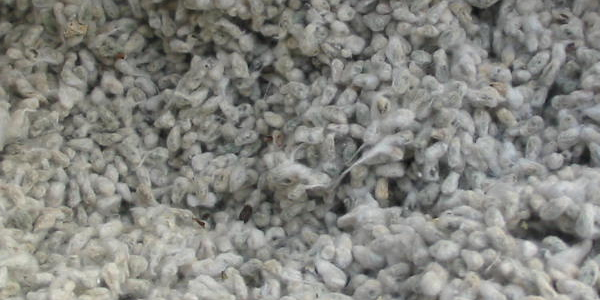
Cottonseed
Cottonseed is the seed of the cotton plant. Recent advances in technology have allowed cottonseed to become one of the leading feed products for livestock in the form of cottonseed meal and cottonseed hulls. Moreover, the oil extracted from the kernels can be refined and served as an edible and nutritious source known as cottonseed oil. It is typically used in salad dressings and cooking oil.
Bulk supplies from around the world.
Wood
Wood is one of the most precious materials known to man and Isnandia Global has supplied countless tons of it to some of the largest furniture and paper manufacturers in the world. From pulp to chips to pellets, you can fulfill all your wood needs here.
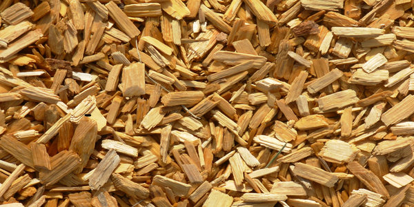
Wood Chips
Used primarily for paper-making, particle-board, pulp and MDF, Isnandia Global supplies both softwood and hardwood chips available upon request. Mostly available in bulk vessels delivered to the destination port. Made to specs.
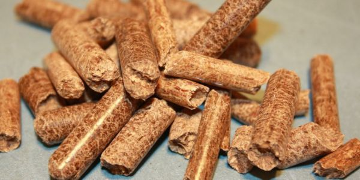
Wood Pellets
Wood pellets are primarily used to provide energy (biomass/fuel). They are mostly available in bulk vessels and are delivered as alternatives to fossil fuels to most ports around the world. Our pellets can be bagged upon request and can meet custom specifications and size.
Responses within the same business day.